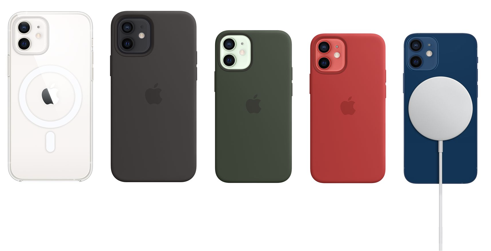

Hire Umeesha
Get the best G&A intern for Apple Inc*
See areas that are right for Umeesha.
See just some of Umeesha's skills.
Compare your wants with her resume.
As an intellectually curious self-starter, I thrive in fast-paced environments that challenge me to use my passion and energy to leave my mark by the end of the internship. But I didn't want to wait until the end of the internship to put my best foot forward at Apple.
So, I created the 'Apple x Umeesha' website because I consider myself to be a hard working, humble, smart, and (a little) funny individual who loves to go above and beyond. However, what I do contribute the most is my great attention to detail, my innovative yet collaborative mindset, and my sharp communications via written and verbal means.
The people at Apple don’t just create products — they create the kind of wonder that’s revolutionized entire industries. With Apple x Umeesha, everything just clicks. We will leave the world better than we found it.
Frequently Asked Questions